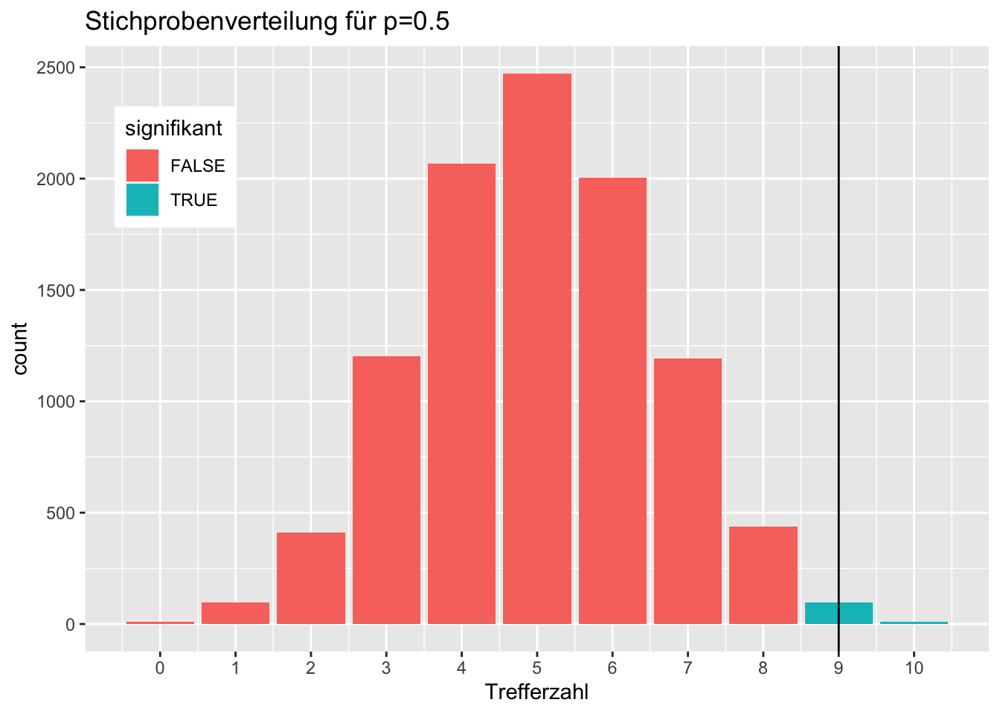
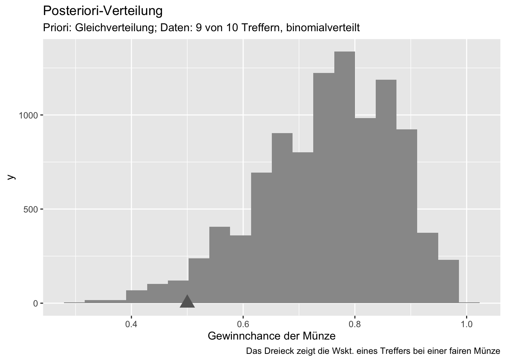
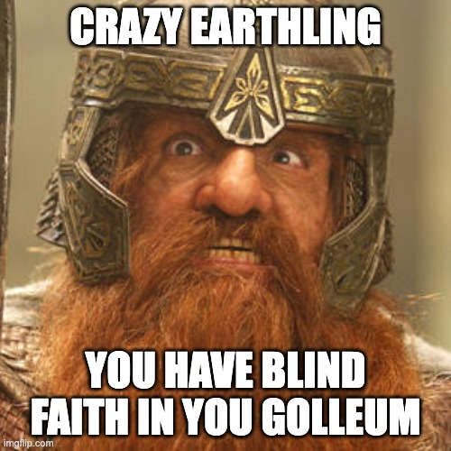
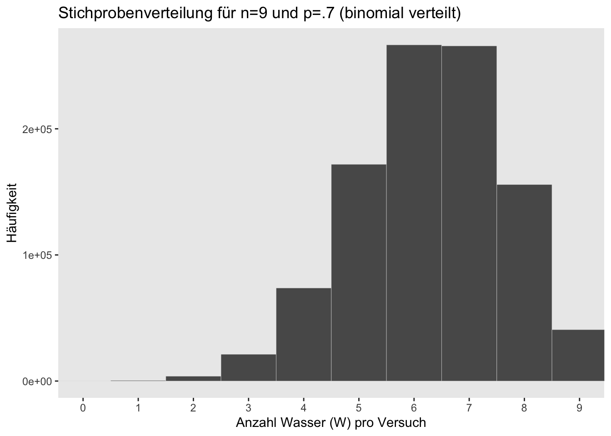
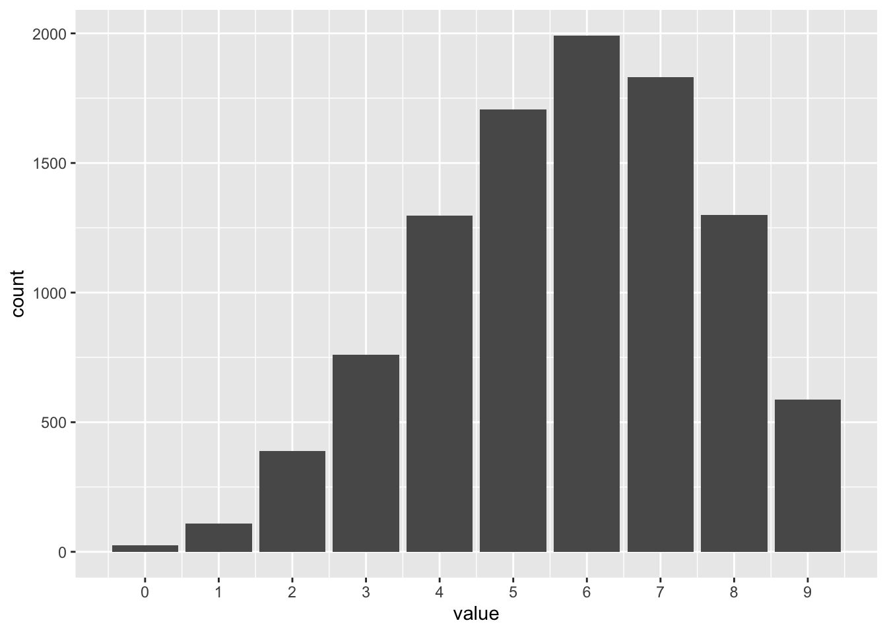

8 Vorhersage-Verteilung

8.1 Lernsteuerung
8.1.1 Lernziele
Nach Absolvieren des jeweiligen Kapitels sollen folgende Lernziele erreicht sein.
Sie können …
- erläutern, was eine Posteriori-Prädiktiv-Verteilung (PPV) ist, und inwiefern Sie vor Übergewissheit schützt
- eine informelle Modellprüfung für das Beispiel aus dem Unterricht anhand der Posteriori-Prädiktiv-Verteilung durchführen
8.1.2 Vorbereitung im Eigenstudium
8.1.3 Benötigte R-Pakete
8.2 Der zwielichte Dozent: Stichproben-Vert. vs. Post-Vert.
In einer dunklen Gasse fordert Sie ein Statistik-Dozent zu einem Glücksspiel heraus1. Münzwurf; wenn er gewinnt, müssen Sie 10 Euro zahlen. Gewinnen Sie, bekommen Sie 11 Euro. Klingt nach einer guten Partie, nicht war? Natürlich nehmen Sie sofort an.
Sie spielen also Münzwurf; der Dozent setzt auf Zahl. Sie spielen 10 Runden. Leider gewinnt der Dozent 9 von 10 Mal2.
Ist die Münze fair oder zieht der mich über den Tisch?, das ist die Frage, die Ihnen brennend durch den Kopf zieht.
“Sind 9 von 10 Treffern noch realistisch erwartbar, wenn es mit rechten Dingen zugeht, oder beweist das Ergebnis, dass die Münze gezinkt ist?”
Wütend (und mit leeren Taschen) ziehen Sie von dannen.
Zusammengefasst: Daten: 9 von 10 Treffern beim Münzwurf. Forschungsfrage: Ist die Münze fair?
Schauen wir uns zunächst einmal an, wie wahrscheinlich 9 von 10 Treffern sind, wenn die Münze fair ist, s. Abbildung 8.1.

Die Stichprobenverteilung zeigt, wie wahrscheinlich die empirischen Daten \(D\) (z.B. 9 von 10 Treffer) sind, gegeben eines Parameterwerts \(\pi\) (z.B. \(p=0.5\)): \(Pr(D|\pi)\)3.
Anders gesagt, die Stichprobenverteilung zeigt die Verteilung der Likelihoods eines bestimmten Parameterwerts.
Der p-Wert
Der p-Wert ist die zentrale Statistik der Inferenzstatistik. Er wird genutzt, um über die Ablehnung einer Hypothese zu entscheiden. In diesem Fall entspricht der p-Wert dem türkis markierten Flächenanteil in Abbildung 8.1. Ist dieser Anteil kleiner als 5% (der Gesamtfläche im Balkendiagramm), so wird die Hypothese (hier: faire Münze) verworfen. Allgemeiner gesprochne berechnet sich der p-Wert als Summe der Likelihoods, die mindestens so extrem sind wie das beobachtete empirische Ergebnis.
In der Bayes-Statistik ist die Post-Verteilung Dreh- und Angelpunkt der Entscheidung über eine Hypothese. In Abbildung 8.2 ist die Posteriori-Verteilung für die Daten zum zwielichten Dozent dargestellt.
# Post-Verteilung:
d_zwielicht <-
tibble(
p_grid = seq( from=0 , to=1 , length.out=100),
prior = 1, # Priori-Gewichte
likelihood = dbinom(8, size = 10, prob=p_grid) ,
unstandardisierte_posterior = likelihood * prior ,
posterior = unstandardisierte_posterior / sum(unstandardisierte_posterior))
# Stichproben ziehen aus der Posteriori-Verteilung:
samples_zwielicht <-
tibble(
gewinnchance_muenze = sample(
d_zwielicht$p_grid ,
prob=d_zwielicht$posterior,
size=1e4,
replace=TRUE)) %>%
mutate(
id = row_number())
gghistogram(samples_zwielicht,
x = "gewinnchance_muenze",
title = "Posteriori-Verteilung für p",
subtitle = "Priori: Gleichverteilung; Daten: 9 von 10 Treffern, binomialverteilt",
xlab = "p (Gewinchance der Münze)",
fill = "grey60") +
geom_vline(xintercept = 0.5)Hilfe für die Funktion gghistogram() finden Sie auf der Hilfeseite der Funktion.
Die Posteriori-Verteilung gibt die Wahrscheinlichkeit jedes Parameterwerts \(p\) wider, gegeben der empirischen Daten \(D\): \(Pr(p|D)\).
Die meisten Forschungsfragen lassen sich mit der Post-Verteilung beantworten, nicht mit der Stichprobenverteilung.
Jetzt können wir wieder die Post-Verteilung auslesen, um die Hypothese zu beantworten. Schauen wir uns einige Beispiel dazu an.
Beispiel 8.1 (Einigermaßen fair?) Wie wahrscheinlich ist es, dass die Münze “einigermaßen” fair ist, sagen wir, eine Trefferwahrscheinlichkeit \(0.45 < \pi < 0.55\)4 aufweist?
samples_zwielicht %>%
count(gewinnchance_muenze > 0.45 & gewinnchance_muenze < 0.55) %>%
mutate(prop = n/sum(n))Die Wahrscheinlichkeit für eine “einigermaßen faire” Münze ist klein, etwa 5%!
Beispiel 8.2 (Münze gezinkt?) Schauen wir uns an, wie wahrscheinlich es ist - gegeben der Daten und unserem Modell - dass die Münze massiv gezinkt ist. “Massiv” definieren wir dabei mit “mindestens 70% Trefferwahrscheinlichkeit”5, also \(\pi >= .7\)6.
Wir finden eine recht hohe Wahrscheinlichkeit für eine “massive” Manipulation der Münze.
Ist es nicht einfach und schön, wie wir mit Hilfe des Stichprobenziehens allerlei Forschungsfragen beantworten können? Eine Post-Verteilung aus Stichproben erlaubt uns, viele Fragen mit einfachen Methoden, nämlich schlichtes Zählen, zu beantworten.
Natürlich könnte (und sollte?) man unser Modell kritisieren. Ist es wirklich sinnvoll, die Trefferwahrscheinlichkeit apriori als gleichverteilt anzunehmen? Das heißt ja, wir glauben, dass eine Trefferwahrscheinlichkeit von 99,99999% genauso wahrscheinlich ist wie 50,55555%. Auf der anderen Seite: Der Charme einer Gleichverteilung ist, dass sie objektiv ist, in dem Sinne, dass wir keinerlei Information einfließen lassen. Wir sind indifferent gegenüber dem Parameter \(\pi\), der Trefferwahrscheinlichkeit.
In einem zweiten Versuch könnten wir jetzt unsere Post-Verteilung als Priori-Verteilung nutzen. Das Ergebnis des ersten Versuchs wird dann hergenommen als Ausgangspunkt für einen zweiten Versuch. Damit wird das Wissen der Wissenschaft weitergegeben7, so wie es sein sollte.
8.3 Mit Stichproben neue Beobachtungen simulieren
Zur Erinnerung: Der Likelihood (L) zeigt die Wahrscheinlichkeit eine Trefferzahl gegeben eines bestimmten Parameterwerts. In unseren Beispiel könnten wir z.B. die drei Likelihoods für \(w=0,1,2\) ausrechnen, gegeben \(N=2\) und \(p = 0.5\):
L <- dbinom(0:2, size = 2, prob = 0.5)
L
## [1] 0.25 0.50 0.25Ah, die Wahrscheinlichkeit für 0 oder 2 Treffer beträgt 50%, wenn \(pi=1/2\); für 1 Treffer beträgt sie entsprechend 50%8.
8.3.1 Wir simulieren die Wasserzahl bei Globuswürfen
Zurück zu unserem Globusversuch!
Wir könnten uns jetzt Globusbälle basteln mit verschiedenen Wasseranteilen, und diese oft hochwerfen. Damit könnten wir herausfinden, welche Trefferzahlen sich bei verschiedenen Wasseranteilen finden lassen würden.
Wer gerne bastelt, freut sich darauf. Kritischere Geister9 würden den Aufwand bemängeln und die Frage nach dem Zweck der Übung stellen10.
Wenn wir wissen, welche Trefferzahlen laut einem Modell zu erwarten sind, können wir die echten (beobachteten) Trefferzahlen mit den laut Modell zu erwartenden vergleichen. Damit haben wir eine Methode, mit dem wir ein Modell auf Herz und Nieren prüfen können. Ein schlechtes Modell wird mit seinen Vorhersagen an der Realität scheitern: Erwartung des Modells und beobachtete Daten passen nicht zusammen. Sagt ein Modell etwa \(W=9\) vorher bei \(N=9\), aber wir finden \(W=0\), so wird unser Vertrauen in das Modell erschüttert sein. Simulation von Trefferzahlen sind also ein Modell, um die Glaubwürdigkeit unseres Golems zu prüfen. (Nicht nur) bei Golems gilt: Vertrauen ist gut, Kontrolle ist besser.
Los geht’s: Wir simulieren \(n=1\) neuen Globusversuch mit \(N=2, p=0.7\) und zählen die (Wasser-)Treffer:
Das geht wie man sieht mit rbinom: r wie random (zufällig) und binom wie binomial verteilt, die Münzwurfverteilung.
Hier sind die Argumente der Funktion rbinom noch etwas näher erklärt:
rbinom(n = Wie oft soll der Versuch wiederholt werden?,
size = Wie viele Globuswürfe pro Versuch (Stichprobengröße),
prob = Wie hoch ist die Wahrscheinlichkeit für Wasser (bzw. für einen Treffer))Weiter: Warum nicht \(n=10\) neue Globusversuche simulieren?
rbinom(n = 10, size = 2, prob = 0.7)
## [1] 0 2 1 1 1 1 2 1 1 2“Simulieren” heißt hier, wir lassen den Computer den Globus werfen, ganz anschaulich gesprochen. Natürlich wirft der Computer nicht in Wirklichkeit einen Globus oder eine Münze, sondern er zieht aus der Menge {0,1} eine Zahl, und wir geben die Wahrscheinlichkeit für jedes der beiden Elemente vor, z.B. jeweils 50%.11.
Simulationsdaten geben Aufschluss, welche Daten (wie oft Wasser) man bei einem bestimmten Modell, \(p,N\), erwarten kann. Münzwürfe - und analoge Versuche, wie Globuswürfe - kann man in R mit rbinom erstellen (simulieren).
8.3.2 Traue niemals einem Golem (einem Modell)

Quelle: https://imgflip.com/i/5qmhmo
Immer prüfen und wachsam bleiben:
- (Inwieweit) decken sich die simulierten Daten mit den tatsächlichen Beobachtungen?
- Wie realistisch sind die Modellannahmen?
- Kann man das Modell aus verschiedenen Perspektiven prüfen?
8.4 Mit guten Simulationen kommt man den wahren Werten nahe
Warum nicht \(n=10^6\) neue Globusversuche simulieren12:
draws <-
tibble(
draws = rbinom(1e6, size = 2, prob = .7))
draws %>%
count(draws) %>%
mutate(prop = n / sum(n))| draws | n | prop |
|---|---|---|
| 0 | 89770 | 0.089770 |
| 1 | 420629 | 0.420629 |
| 2 | 489601 | 0.489601 |
Diese simulierten Häufigkeiten sind sehr ähnlich zu den theoretisch bestimmten Häufigkeiten mit dbinom: Unser Modell liefert plausible Vorhersagen13.
dbinom(0:2, size = 2, prob = .7)
## [1] 0.09 0.42 0.498.5 Stichprobenverteilung
Wir ziehen viele (\(n=10^6\)) Stichproben für unseren typischen Globusversuch: \(N=9\) Globuswürfe mit \(p=0.7\).
Wie viele Wasser (W) erhalten wir wohl typischerweise in diesem Versuch? Die Verteilung der zu erwartenden Treffer ist in Abbildung 8.3 dargestellt.

Die Stichprobenverteilung zeigt, welche Stichprobendaten laut unserem Modell (einem bestimmten Parameterwert) zu erwarten sind. Wir können jetzt prüfen, ob die echten Daten zu den Vorhersagen des Modells passen.
Die Stichprobenverteilung ist keine empirische Verteilung: Wir führen diese vielen Versuche nicht wirklich durch14, wir simulieren sie nur am Computer.
8.6 Die Posterior-Prädiktiv-Verteilung (PPV)
8.6.1 Was ist die PPV und wozu ist sie gut?
Unsere Stichprobenverteilung zeigt, welche Trefferzahlen bei einem bestimmten Parameterwert, z.B. \(\pi=.7\) in welchen Anteilen zu erwarten sind. Allerdings sind wir uns ja nicht sicher, dass der Wasseranteil genau 70% beträgt. Unser (Un-)Wissen über den Wasseranteil wird ja gerade in der Post-Verteilung gespeichert.
Um eine ehrliche(re) Antwort auf die Frage zu erhalten, wie viele Treffer15 zu erhalten ist, müssen wir die Post-Verteilung berücksichtigen.
Wir brauche ein Stichprobenverteilung für jeden Wert der Post-Verteilung. Wenn wir dann die resultierenden Strichprobenverteilungen mitteln, haben wir einen ehrlichen Überblick über die zu erwartenden Trefferzahlen. Dabei sollten wir natürlich wahrscheinliche Parameterwerte höher gewichten als unwahrscheinliche. So sollte etwa der (hoch wahrscheinliche) Wasseranteil von 70% ein hohes Gewicht beim Mitteln der Stichprobenverteilung erhalten; der sehr unwahrscheinliche Wasseranteil16 von 1% Wasser, sollte entsprechend weniger gewichtet werden, beim Zusammenfassen (d.h. Mittelwert bilden) der Stichprobenverteilungen.
Die resultierende Verteilung - gemittelte Stichprobenverteilungen über alle Werte der Post-Verteilungen - nennt man Posterior-Prädiktiv-Verteilung (PPV).
Die PPV entsteht als gewichteter Mittelwert der Stichprobenverteilungen. Die Gewichte sind die Wahrscheinlichkeiten (bzw. Wahrscheinlichkeitsdichten) der Post-Verteilung.
Beispiel 8.3 (Magnus Lagrande braucht die PPV) Im Jahre \(10^{99}\) wird das Universum von Magnus Lagrande regiert. Die Weltraumbehörde, für die Sie arbeiten, ist ihm unterstellt. Der Regent findet Ihre Untersuchungen zwar ganz nett, aber leider versteht er keine Wahrscheinlichkeit. Ist ihm zu abstrakt, sagt er. “Oder können Sie mir mal so eine Wahrscheinlichkeit in die Hand geben? Können Sie sagen, Achtung, da hinten rennt eine Wahrscheinlichkeit, fang sie!” Magnus ist also ein Freund für des Konkreten. Einige einflussreiche Gruppen an Statistikis unterstützen diese Haltung
Jedenfalls hätte Magnus gerne eine Aussage wie “Vermutlich sehen wir beim nächsten Versuch irgendwas zwischen 4 und 7 Treffern”.
Natürlich haben Sie den Anspruch, eine wissenschaftlich belastbare Aussage zu tätigen.
Was nun? Sie müssen sozusagen die Post-Verteilung in eine Post-Verteilung der Beobachtungen, also der konkreten Werte - in diesem Fall die Anzahl der Wassertreffer - übersetzen. Genau das macht die PPV für Sie!
8.6.2 Visualisierung der PPV
Der Prozess des gewichteten Zusammenfassens der Stichprobenverteilungen ist in Abbildung 8.4 dargestellt.

Quelle: (mcelreath_statistical_2020?)
8.6.3 PPV berechnen
Die PPV für unseren Standard-Globusversuch (\(N=9\)) berechnen wir so:
Wir berechnen viele (z.B. \(10^4\)) Stichprobenverteilungen. Dabei müssen wir jedes Mal fragen, wie groß die Wahrscheinlichkeit \(\pi\) für Wasser17 ist. Wasseranteile \(\pi\), die laut Post-Verteilung wahrscheinlich sind, müssen wir entsprechend oft als Parameterwert (\(\pi\)) der Stichprobenverteilung verwenden; umgekehrt dürfen wir nur wenige Stichprobenverteilungen für unwahrscheinliche Parameterwerte erstellen.
Beispielsweise würden wir viele Stichprobenverteilungen für \(\pi=.7\) erstellen; für \(\pi=0.01\) würden wir wenige Stichprobenverteilungen erstellen, s. Abbildung 8.4.
Glücklicherweise spiegelt unsere Stichproben-Postverteilung samples wahrscheinlichere Parameterwerte wieder, indem wahrscheinlichere Parameterwerte häufiger vorkommen.
Wahrscheinliche Parameterwerte kommen in der Stichproben-Postverteilung samples häufiger vor. Die Häufigkeit der Parameterwerte spiegelt die Wahrscheinlichkeit der jeweiligen Parameterwerte in der (theoretischen) Postverteilung wider.
Schauen Sie sich vielleicht zur Erinnerung noch einmal die Definition von samples an, s. Listing 7.1. Tabelle samples, die aus Stichproben aus der Post-Verteilung besteht, ist (in Auszügen) in Tabelle 7.2 dargestellt. Wie die Post-Verteilung auf Basis von Stichproben dann aussieht sieht man in Abbildung 7.2. Globusversuche kann man mit rbinom simulieren, s. Kapitel 8.3.1.
Wir simulieren also viele (z.B \(10^4\)) Globusversuche, jeweils mit \(N=9\) Würfen. Wahrscheinliche Parameterwerte, etwa \(\pi=7\), sollen häufiger verwendet werden (bei unseren vielen Globusversuchen) als unwahrscheinliche.
Praktischerweise sind die Werte in der Spalte p_grid in samples so häufig vertreten, wie ihre Wahrscheinlichkeit es erwarten lässt. Hier ist ein Auszug aus samples:
samples %>%
select(p_grid) %>%
slice_head(n = 10)Wie man sieht, sind wahrscheinliche Parameterwerte häufiger vertreten.18
p_grid ist also eine Liste19 von Parameterwerten, deren Häufigkeit die Wahrscheinlichkeit der Parameterwerte gewichtet.
Auf dieser Basis können wir die PPV erstellen:
Schauen wir uns ein Histogramm aller Trefferzahlen an, s. Abbildung 8.5.20

Die PPV unseres Modells zeigt uns (Abbildung 8.5), dass wir in künftigen Versuchen zumeist 6 Treffer zu erwarten haben. Aber ein relativer breiter Bereich an Treffern ist ebenfalls gut laut unserer PPV erwartbar.
Die PPV zeigt, welche Beobachtungen laut unserem Modell häufig und welche selten sind. Die PPV zeigt keine Parameterwerte, sondern welche Daten (Beobachtungen, Wasserzahlen) wir in künftigen Versuchen wie häufig erwarten können.
Beispiel 8.4 (Der nächste Planet) Nur zum Spaß spulen wir kurz die Zeit im Universum vor, sagen wir so \(10^{99}\) Jahre. Sie arbeiten bei einer Raumfahrtbehörde, die nach neuen Planeten sucht. Nun wurde ein aussichtsreicher Planet gesichtet. Ihre Behörde hat eine Studie gestartet, im Rahmen derer 9 Sonden zu diesem (weit entfernten) Planeten geschossen sind. Von den 9 Sonden sind 6 im Wasser gelandet, was aus Gründen intergalaktischer Wasserknappheit eine gute Nachricht ist.
“Der nächste Planet wird sicher 6 von 9 Wassertreffer erzielen!”
– Presse-Chefi der intergalaktischer SpaceY Raumfahrtsbehörde
Jetzt plant Ihre Behörde den Versuch zu wiederholen: Wieder sollen 9 Sonden zu diesem Planeten geschossen werden. Dis Presse-Chefi21 tönt vollmundig: “Ich bin sicher, dass wir wieder 6 von 9 Treffer, also 6 von 9 Mal Wasser, haben werden!”.
Kann man diese Aussage mit (hoher) Sicherheit leisten? Perfekte Sicherheit gibt es bekanntlich nur, was Tod und Steuern betrifft, aber kann diese Aussage mit zumindest hoher Sicherheit geleistet werden?
Nein, die PPV (Abbildung 8.5) zeigt deutlich, dass unser Wissen nicht ausreicht, um präzise Vorhersagen über künftige Ausgänge des Versuchs zu leisten. So sind auch 5 oder 7 Treffer gut möglich. Auch 4 oder 8 Treffer sind nicht so selten. Sogar 9 Treffer sind nicht super selten.
Dis Presse-Chefi Ihrer Behörde sollte also den Mund nicht so voll nehmen.
8.7 Fazit
8.7.1 Vorhersagen sind schwierig
… gerade wenn sie die Zukunft betreffen, so ein Sprichwort.
Das zeigt uns die PPV: Der PPV unseres Modells gelingt es zwar, der theoretisch wahrscheinlichste Parameterwert ist auch der häufigste in unseren Stichproben, aber die Vorhersagen haben eine große Streuung, bergen also recht hohe Ungewissheit. Die PPV zeigt also, welche Beobachtungen laut unserem Modell künftig zu erwarten sind, s. Abbildung 8.5.
Würde man die Vorhersagen nur anhand eines bestimmten Parameterwertes (z.B \(p=0.6\)) vornehmen, hätten die Vorhersagen zu wenig Streuung in den Vorhersagen, würden also die Ungewissheit nicht ausreichend abbilden. Es würde Übergewissheit (Overconfidence, Overfitting) resultieren.
Wir brauchen die PPV. Ohne die PPV können wir nicht seriös abschätzen, wie viel Ungewissheit in unseren Vorhersagen steckt.
8.7.2 Zwei Arten von Ungewissheit in Vorhersagen von Modellen
Ungewissheit innerhalb des Modells (“intrinsische” Ungewissheit): Auch wenn der (oder die) Modellparameter eines Modells mit Sicherheit bekannt sind, so bleibt Unsicherheit, welche Beobachtung eintreten wird: Auch wenn man sicher weiß, dass \(p=1/4\) Murmeln blau sind, so kann man nicht sicher sagen, welche Farbe die nächste Murmel haben wird (Ausnahme: \(p=1\) oder \(p=0\)).
Ungewissheit in den Modellparametern: Wir sind uns nicht sicher, welchen Wert \(p\) (bzw. die Modellparameter) haben. Diese Unsicherheit ist in der Post-Verteilung dargestellt.
Um zu realistischen Vorhersagen zu kommen, möchte man beide Arten von Ungewissheit berücksichtigen: Das macht die Posteriori-Prädiktiv-Verteilung (PPV).
Die PPV zeigt, welche Daten das Modell vorhersagt (prädiktiv) und mit welcher Häufigkeit, basierend auf der Post-Verteilung.
Der Unterschied zwischen der Post-Verteilung und der PPV ist erstmal, dass die PPV Ausprägungen in ihrer Wahrscheinlichkeit bemisst, also z.B. wie wahrscheinlich 4 von 9 Wassertreffern sind. Die Post-Verteilung bemisst die Wahrscheinlichkeit von Parameterwerten, also z.B. des Wasseranteils.
Etwas tiefer betrachtet zeigt die PPV zwei Arten von Ungewissheit, die Post-Verteilung nur eine. Die PPV zeigt erstens die Ungewissheit zur Verteilung des Parameters (wie die Post-Verteilung), aber auch noch die intrinsische Ungewissheit. Denn auch wenn wir keine Ungewissheit zum Parameter hätten, bliebe Ungewissheit, welche Beobachtungen sich manifestieren. Insofern ist die PVV “ehrlicher”, sie spiegelt die Ungewissheit zu den Beobachtungen wider.
8.7.3 Vergleich der Verteilungen
Abbildung 8.6 stellt die in diesem Kapitel diskutierten Verteilungen gegenüber:
- Links - Posterior-Verteilung: Wahrscheinlichkeiten der Parameterwerte
- Mitte - Stichprobenverteilung: Wahrscheinlichkeiten der Beobachtungen gegeben eines bestimmten Parameterwertes
- Rechts - Posterior-Prädiktiv-Verteilung: Wahrscheinlichkeiten der Beobachtungen unter Berücksichtigung der Unsicherheit der Posteriori-Verteilung

8.7.4 So viele Verteilungen…
- Die Posteriori-Verteilung gibt Aufschluss zur Häufigkeit (Wahrscheinlichkeit) von Parameterwerten:
- Wie wahrscheinlich ist es, dass “in Wirklichkeit” der Wasseranteil 70% beträgt, also \(\pi=.7\)
- In der Wissenschaft ist man meist an den Parametern interessiert.
- Die PPV gibt Aufschluss zur Häufigkeit von neuen Beobachtungen:
- Welche Beobachtungen (wie viele Wasser/Treffer) sind in Zukunft, bei erneuter Durchführung, zu erwarten.
- Für die Praxis kann das eine interessante Frage sein.
- Der Likelihood gibt Aufschluss, wie gut eine bestimmte Hypothese die Datenlage erklärt.
- Wie gut passt die Hypothese \(\pi=0.7\) auf die Datenlage 6 von 9 Treffern beim Globusversuch?
- Der Likelihood kann aus der Stichprobenverteilung herausgelesen werden.
8.8 Aufgaben
8.9 —
Hier bräuchte es ein passendes Meme; Vorschläge bitte an mich.↩︎
was er mit lautem Gelächter quittiert↩︎
Das griechische kleine p wird “pi” genannt und \(\pi\) geschrieben. Zur Erinnerung: Parameter- oder Populationskennwerte werden in der Statistik häufig mit griechischen Buchstaben benannt, um sie von Stichprobenkennwerten abzugrenzen.↩︎
zwischen 45% und 55% mit anderen Worten↩︎
ja, das ist subjektiv↩︎
Führende Nullen bei Anteilen werden oft weggelassen, man schreibt also oft .7 wenn man 0.7 bzw. 70% meint. Das ist nicht nur kürzer, sondern man weiß auch direkt dass es sich um einen Anteil handelt. Behält man die führende Null bei, etwa 0.77, so würde das signalisieren, dass die Zahl auch größer als Null sein könnte.↩︎
übrigens auf mathematisch gesehen ideale Art und Weise.↩︎
das sollte uns bekannt vorkommen↩︎
oder weniger bastelfreundliche↩︎
bravo!↩︎
Übrigens können Computer nicht echten Zufall erzeugen (das kann vermutlich niemand), aber durch gewisse verzwickte Rechnungen sind die Zahlen, die der Computer uns präsentiert, nicht oder kaum vom “Zufall” zu unterscheiden, also z.B. gleichverteilt ohne besondere Muster.↩︎
Wer R nicht mag, ist eingeladen, diesen Versuch von Hand mit selbstgebastelten Globusbällen zu wiederholen.↩︎
Braver Golem!↩︎
Nur die extremen Bastelfreunde machen das↩︎
Im Globusversuch ist Wasser der “Treffer”; in einem Münzwurf-Versuch könnte “Kopf” der Treffer und die Anzahl der geworfenen Köpfe die Trefferzahl sein↩︎
zumindest laut unserer Post-Verteilung↩︎
d.h. einen Treffer↩︎
An dieser Stelle sollten Sie sichd die ganze Spalte
p_gridanschauen, um sich von dieser Behauptung mit eigenen Augen zu überzeugen.↩︎technisch in R ein Vektor↩︎
Es kann auch dem Verständnis helfen, dass Sie sich alle Werte der Tabelle
ppvselber in Ruhe anschauen, um sich zu überzeugen, welche Wasserzahlen (Trefferzahlen) häufiger und welche seltener vorkommen.↩︎In der Zeit dieses Beispiels ist es üblich, kein fixes Geschlecht zu haben↩︎